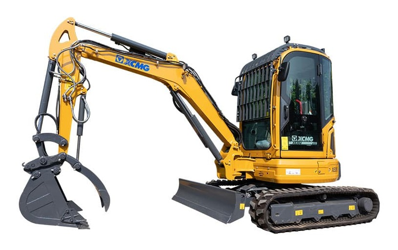

狭窄空间 / 市政庭院
工况特点：看重窄机身、短尾回转、低运输尺寸和边角贴墙作业能力。
有益配置：可伸缩底盘、动臂偏摆、推土铲偏摆、后视安全配置对庭院和市政抢修更有价值。
领先：迪尔 35P 68.8 分；XCMG 46.2 分，第 7。
配置贡献领先：卡特 303.5CR 10.2 分；XCMG 配置项按实际标选配测算。
按统一小挖竞品对标方法，把参数、标选配、典型工况、配置贡献、差距来源和提升模拟拆开展示。结论均从用户提供 Excel 原始值计算，不用纯主观判断替代数据。

工况特点：看重窄机身、短尾回转、低运输尺寸和边角贴墙作业能力。
有益配置：可伸缩底盘、动臂偏摆、推土铲偏摆、后视安全配置对庭院和市政抢修更有价值。
领先：迪尔 35P 68.8 分；XCMG 46.2 分，第 7。
配置贡献领先：卡特 303.5CR 10.2 分；XCMG 配置项按实际标选配测算。
工况特点：核心是下挖深度、挖掘半径、斗杆挖掘力和长斗杆覆盖能力。
有益配置：长斗杆、AUX 管路和动臂斗杆防爆阀有助于深沟、管线和基础作业。
领先：斗山 DX35Z-7 69.3 分；XCMG 56.4 分，第 3。
配置贡献领先：卡特 303.5CR 13.6 分；XCMG 配置项按实际标选配测算。
工况特点：看卸载高度、挖掘力、液压流量、回转和行走响应。
有益配置：经济模式、自动怠速、推土铲浮动和快换管路影响短循环油耗与辅助动作效率。
领先：沃尔沃 EC37 81.2 分；XCMG 59 分，第 4。
配置贡献领先：山猫 E35 13.8 分；XCMG 配置项按实际标选配测算。
工况特点：重点是液压系统流量、压力和 AUX 管路覆盖。
有益配置：AUX1/AUX2、卸油管路、流量保持和快换管路决定破碎锤、拇指夹、螺旋钻等属具适配效率。
领先：沃尔沃 EC37 73.1 分；XCMG 58.1 分，第 3。
配置贡献领先：XCMG XE35U 23 分；XCMG 配置项按实际标选配测算。
工况特点：关注接地比压、履带宽度、牵引、爬坡和起吊能力。
有益配置：副配重、推土铲浮动、驾驶室安全和行走报警可以增强坡地和吊装边界。
领先：沃尔沃 EC37 72.5 分；XCMG 47.7 分，第 7。
配置贡献领先：现代 HX35AZ 9 分；XCMG 配置项按实际标选配测算。
工况特点：看运输尺寸、油耗管理、易用性、安全提醒和远程管理。
有益配置：自动怠速、自动停机、远程信息处理、报警灯、行走报警和驾驶舒适配置直接影响租赁周转。
领先：卡特 303.5CR 65.7 分；XCMG 25.8 分，第 10。
配置贡献领先：卡特 303.5CR 41.8 分；XCMG 配置项按实际标选配测算。
对标对象：总体排名第一的参照产品是 沃尔沃 EC37；单项追赶不只看整机排名，重点拆到 行走压力、AUX1流量、AUX1压力、整机运输高度 等具体指标。
硬参数差距：
配置差距：
| 产品 | 总体 | 工况 | 参数 | 配置 |
|---|---|---|---|---|
| 沃尔沃 EC37 | 60.5 | 63.2 | 63.6 | 49 |
| 现代 HX35AZ | 54.7 | 55.9 | 56.4 | 49 |
| 卡特 303.5CR | 54 | 53.3 | 50 | 61.5 |
| 山猫 E35 | 52.4 | 51.3 | 62.1 | 40.6 |
| 斗山 DX35Z-7 | 49 | 51.9 | 55 | 33 |
| XCMG XE35U | 46.6 | 49.8 | 50.3 | 33.1 |
| 迪尔 35P | 44.9 | 49.7 | 45.3 | 32.4 |
| 三一 SY35U | 44 | 47 | 51.4 | 25.4 |
| 久保田 KX033 | 42.7 | 45.1 | 45.5 | 32.2 |
| 久保田 U35 | 42 | 42.8 | 49.4 | 28.9 |
点击雷达图例可多选品牌进行对比；再次点击已选品牌可取消，全部取消后恢复全品牌展示。
工况特点：看重窄机身、短尾回转、低运输尺寸和边角贴墙作业能力。
有益配置：可伸缩底盘、动臂偏摆、推土铲偏摆、后视安全配置对庭院和市政抢修更有价值。
领先：迪尔 35P 68.8 分；XCMG 46.2 分，第 7。
配置贡献领先：卡特 303.5CR 10.2 分；XCMG 配置项按实际标选配测算。
工况特点：核心是下挖深度、挖掘半径、斗杆挖掘力和长斗杆覆盖能力。
有益配置：长斗杆、AUX 管路和动臂斗杆防爆阀有助于深沟、管线和基础作业。
领先：斗山 DX35Z-7 69.3 分；XCMG 56.4 分，第 3。
配置贡献领先：卡特 303.5CR 13.6 分；XCMG 配置项按实际标选配测算。
工况特点：看卸载高度、挖掘力、液压流量、回转和行走响应。
有益配置：经济模式、自动怠速、推土铲浮动和快换管路影响短循环油耗与辅助动作效率。
领先：沃尔沃 EC37 81.2 分；XCMG 59 分，第 4。
配置贡献领先：山猫 E35 13.8 分；XCMG 配置项按实际标选配测算。
工况特点：重点是液压系统流量、压力和 AUX 管路覆盖。
有益配置：AUX1/AUX2、卸油管路、流量保持和快换管路决定破碎锤、拇指夹、螺旋钻等属具适配效率。
领先：沃尔沃 EC37 73.1 分；XCMG 58.1 分，第 3。
配置贡献领先：XCMG XE35U 23 分；XCMG 配置项按实际标选配测算。
工况特点：关注接地比压、履带宽度、牵引、爬坡和起吊能力。
有益配置：副配重、推土铲浮动、驾驶室安全和行走报警可以增强坡地和吊装边界。
领先：沃尔沃 EC37 72.5 分；XCMG 47.7 分，第 7。
配置贡献领先：现代 HX35AZ 9 分；XCMG 配置项按实际标选配测算。
工况特点：看运输尺寸、油耗管理、易用性、安全提醒和远程管理。
有益配置：自动怠速、自动停机、远程信息处理、报警灯、行走报警和驾驶舒适配置直接影响租赁周转。
领先：卡特 303.5CR 65.7 分；XCMG 25.8 分，第 10。
配置贡献领先：卡特 303.5CR 41.8 分；XCMG 配置项按实际标选配测算。
工况特点：看重窄机身、短尾回转、低运输尺寸和边角贴墙作业能力。
有益配置：可伸缩底盘、动臂偏摆、推土铲偏摆、后视安全配置对庭院和市政抢修更有价值。
| 类型 | 关键项 | 权重 |
|---|---|---|
| 参数 | 整机运输宽度 | 18% |
| 参数 | 整机运输长度 | 12% |
| 参数 | 尾部回转半径 | 24% |
| 参数 | 动臂偏摆（左/右） | 18% |
| 配置 | 推土铲偏摆 | 7% |
| 配置 | 后视摄像头 | 6% |
| 配置 | 行走报警 | 4% |
| 配置 | 报警灯 | 3% |
| 指标/配置 | 类型 | 权重 | 对工况影响 | XCMG XE35U | 卡特 303.5CR | 迪尔 35P | 山猫 E35 | 久保田 U35 | 久保田 KX033 | 沃尔沃 EC37 | 现代 HX35AZ | 斗山 DX35Z-7 | 三一 SY35U |
|---|---|---|---|---|---|---|---|---|---|---|---|---|---|
| 整机运输宽度 | 参数 | 18% | 越窄越适合入户、园林和人行道受限空间。 | 174017.4分贡献 3.1 · 有效数据 | 17800分贡献 0 · 有效数据 | 174017.4分贡献 3.1 · 有效数据 | 17694.8分贡献 0.9 · 有效数据 | 170034.8分贡献 6.3 · 有效数据 | 1550100分贡献 18 · 有效数据 | 17800分贡献 0 · 有效数据 | 174017.4分贡献 3.1 · 有效数据 | 170034.8分贡献 6.3 · 有效数据 | 172026.1分贡献 4.7 · 有效数据 |
| 整机运输长度 | 参数 | 12% | 短车身转场和狭小现场调头更灵活。 | 49600分贡献 0 · 有效数据 | 480044分贡献 5.3 · 有效数据 | 464087.9分贡献 10.5 · 有效数据 | 482636.8分贡献 4.4 · 有效数据 | 474958分贡献 7 · 有效数据 | 473063.2分贡献 7.6 · 有效数据 | 4596100分贡献 12 · 有效数据 | 477251.6分贡献 6.2 · 有效数据 | 478049.5分贡献 5.9 · 有效数据 | 491013.7分贡献 1.6 · 有效数据 |
| 尾部回转半径 | 参数 | 24% | 尾扫越小越不容易碰墙、碰车和碰围挡。 | 87097.6分贡献 23.4 · 有效数据 | 890/960/1005 （副配重）92.7分贡献 22.2 · 有效数据 | 870/980 （副配重）97.6分贡献 23.4 · 有效数据 | /-分贡献 - · 缺失 | 90190分贡献 21.6 · 有效数据 | 12504.9分贡献 1.2 · 有效数据 | 1270/1350 （副配重）0分贡献 0 · 有效数据 | 900/985 （副配重）90.2分贡献 21.7 · 有效数据 | 875/940 （副配重）96.3分贡献 23.1 · 有效数据 | 860100分贡献 24 · 有效数据 |
| 动臂偏摆（左/右） | 参数 | 18% | 越能贴边开沟、贴墙清底，狭窄空间收益越高。 | 75/5050分贡献 9 · 有效数据 | 75/5050分贡献 9 · 有效数据 | 驾驶棚72/62 驾驶室62/62100分贡献 18 · 有效数据 | /-分贡献 - · 缺失 | 71/450分贡献 0 · 有效数据 | 70/4811.1分贡献 2 · 有效数据 | 75/5577.8分贡献 14 · 有效数据 | 75/5050分贡献 9 · 有效数据 | 66.5/53.522.2分贡献 4 · 有效数据 | /-分贡献 - · 缺失 |
| 推土铲偏摆 | 配置 | 7% | 角落回填和边沟修整时减少重复调车。 | /0分贡献 0 · 无配置 | 选配60分贡献 4.2 · 选配 | 选配60分贡献 4.2 · 选配 | 选配60分贡献 4.2 · 选配 | 选配60分贡献 4.2 · 选配 | 选配60分贡献 4.2 · 选配 | 选配60分贡献 4.2 · 选配 | 选配60分贡献 4.2 · 选配 | /0分贡献 0 · 无配置 | /0分贡献 0 · 无配置 |
| 后视摄像头 | 配置 | 6% | 城市巷道和庭院倒车安全配置。 | /0分贡献 0 · 无配置 | 选配，搭配选配仪表60分贡献 3.6 · 选配 | /0分贡献 0 · 无配置 | 选配60分贡献 3.6 · 选配 | /0分贡献 0 · 无配置 | /0分贡献 0 · 无配置 | /0分贡献 0 · 无配置 | /0分贡献 0 · 无配置 | 选配60分贡献 3.6 · 选配 | /0分贡献 0 · 无配置 |
| 行走报警 | 配置 | 4% | 人车混行环境降低安全风险。 | 标配100分贡献 4 · 标配 | 选配60分贡献 2.4 · 选配 | 标配100分贡献 4 · 标配 | /0分贡献 0 · 无配置 | 选配60分贡献 2.4 · 选配 | 选配60分贡献 2.4 · 选配 | 选配60分贡献 2.4 · 选配 | 标配100分贡献 4 · 标配 | 选配60分贡献 2.4 · 选配 | 标配100分贡献 4 · 标配 |
| 报警灯 | 配置 | 3% | 市政施工和租赁场景提高周边可感知性。 | 标配100分贡献 3 · 标配 | /0分贡献 0 · 无配置 | /0分贡献 0 · 无配置 | /0分贡献 0 · 无配置 | 选配60分贡献 1.8 · 选配 | 选配60分贡献 1.8 · 选配 | 选配60分贡献 1.8 · 选配 | 选配60分贡献 1.8 · 选配 | 选配60分贡献 1.8 · 选配 | 标配100分贡献 3 · 标配 |
本工况建议以 迪尔 35P 作为第一参照；XCMG 需要重点看 整机运输宽度、整机运输长度、动臂偏摆（左/右）。
工况特点：核心是下挖深度、挖掘半径、斗杆挖掘力和长斗杆覆盖能力。
有益配置：长斗杆、AUX 管路和动臂斗杆防爆阀有助于深沟、管线和基础作业。
| 类型 | 关键项 | 权重 |
|---|---|---|
| 参数 | 最大挖掘深度 | 28% |
| 参数 | 最大挖掘半径 | 14% |
| 参数 | 最大地面挖掘半径 | 12% |
| 参数 | 斗杆挖掘力 | 12% |
| 参数 | 标配斗杆 | 8% |
| 参数 | 选配斗杆 | 6% |
| 配置 | 长斗杆 | 8% |
| 配置 | 动臂斗杆防爆阀 | 6% |
| 指标/配置 | 类型 | 权重 | 对工况影响 | XCMG XE35U | 卡特 303.5CR | 迪尔 35P | 山猫 E35 | 久保田 U35 | 久保田 KX033 | 沃尔沃 EC37 | 现代 HX35AZ | 斗山 DX35Z-7 | 三一 SY35U |
|---|---|---|---|---|---|---|---|---|---|---|---|---|---|
| 最大挖掘深度 | 参数 | 28% | 深度决定基础沟槽和管线施工覆盖范围。 | 306053.8分贡献 15.1 · 有效数据 | 28100分贡献 0 · 有效数据 | 306053.8分贡献 15.1 · 有效数据 | 307757.4分贡献 16.1 · 有效数据 | 297034.4分贡献 9.6 · 有效数据 | 321086分贡献 24.1 · 有效数据 | 313369.5分贡献 19.4 · 有效数据 | 298036.6分贡献 10.2 · 有效数据 | 3275100分贡献 28 · 有效数据 | 310563.4分贡献 17.8 · 有效数据 |
| 最大挖掘半径 | 参数 | 14% | 半径越大，站位不变时覆盖面越宽。 | 530076.3分贡献 10.7 · 有效数据 | 527063.4分贡献 8.9 · 有效数据 | 521037.5分贡献 5.3 · 有效数据 | /-分贡献 - · 缺失 | 527264.2分贡献 9 · 有效数据 | 523046.1分贡献 6.5 · 有效数据 | 51230分贡献 0 · 有效数据 | 529072分贡献 10.1 · 有效数据 | 5355100分贡献 14 · 有效数据 | /-分贡献 - · 缺失 |
| 最大地面挖掘半径 | 参数 | 12% | 平面沟槽连续开挖效率更高。 | 520047.4分贡献 5.7 · 有效数据 | 513033.5分贡献 4 · 有效数据 | /-分贡献 - · 缺失 | 519045.4分贡献 5.5 · 有效数据 | 516540.5分贡献 4.9 · 有效数据 | 512031.5分贡献 3.8 · 有效数据 | 49610分贡献 0 · 有效数据 | 517041.5分贡献 5 · 有效数据 | 523554.4分贡献 6.5 · 有效数据 | 5465100分贡献 12 · 有效数据 |
| 斗杆挖掘力 | 参数 | 12% | 深挖末端破土和清底能力。 | 20.357.4分贡献 6.9 · 有效数据 | 18.931.5分贡献 3.8 · 有效数据 | 1933.3分贡献 4 · 有效数据 | 20.866.7分贡献 8 · 有效数据 | 19.848.1分贡献 5.8 · 有效数据 | 17.20分贡献 0 · 有效数据 | 22.6100分贡献 12 · 有效数据 | 19.950分贡献 6 · 有效数据 | 20.866.7分贡献 8 · 有效数据 | 18.320.4分贡献 2.4 · 有效数据 |
| 标配斗杆 | 参数 | 8% | 斗杆长度影响天然深挖覆盖。 | 135064.3分贡献 5.1 · 有效数据 | 12600分贡献 0 · 有效数据 | 131539.3分贡献 3.1 · 有效数据 | /-分贡献 - · 缺失 | /-分贡献 - · 缺失 | /-分贡献 - · 缺失 | 1400100分贡献 8 · 有效数据 | 130028.6分贡献 2.3 · 有效数据 | 133050分贡献 4 · 有效数据 | 1400100分贡献 8 · 有效数据 |
| 选配斗杆 | 参数 | 6% | 选配斗杆说明是否可向深挖场景扩展。 | /-分贡献 - · 缺失 | 156027.9分贡献 1.7 · 有效数据 | 1715100分贡献 6 · 有效数据 | 可伸缩-分贡献 - · 缺失 | /-分贡献 - · 缺失 | 可伸缩-分贡献 - · 缺失 | 170093分贡献 5.6 · 有效数据 | 160046.5分贡献 2.8 · 有效数据 | 15000分贡献 0 · 有效数据 | /-分贡献 - · 缺失 |
| 长斗杆 | 配置 | 8% | 深沟和管线施工直接增益配置。 | /0分贡献 0 · 无配置 | 选配1560mm60分贡献 4.8 · 选配 | 选配1715mm60分贡献 4.8 · 选配 | /0分贡献 0 · 无配置 | /0分贡献 0 · 无配置 | /0分贡献 0 · 无配置 | 选配1715mm60分贡献 4.8 · 选配 | 选配1600mm60分贡献 4.8 · 选配 | 选配1500mm60分贡献 4.8 · 选配 | /0分贡献 0 · 无配置 |
| 动臂斗杆防爆阀 | 配置 | 6% | 基础施工和吊装附近作业的安全配置。 | 选配60分贡献 3.6 · 选配 | 选配60分贡献 3.6 · 选配 | /0分贡献 0 · 无配置 | /0分贡献 0 · 无配置 | /0分贡献 0 · 无配置 | /0分贡献 0 · 无配置 | 选配60分贡献 3.6 · 选配 | 选配60分贡献 3.6 · 选配 | /0分贡献 0 · 无配置 | /0分贡献 0 · 无配置 |
| AUX1管路 | 配置 | 4% | 便于搭配夯实、破碎和清沟属具。 | 标配100分贡献 4 · 标配 | 标配100分贡献 4 · 标配 | 标配100分贡献 4 · 标配 | 标配100分贡献 4 · 标配 | 标配100分贡献 4 · 标配 | 标配100分贡献 4 · 标配 | 标配100分贡献 4 · 标配 | 标配100分贡献 4 · 标配 | 标配100分贡献 4 · 标配 | 标配100分贡献 4 · 标配 |
| AUX2管路 | 配置 | 2% | 旋转类属具扩展能力。 | 标配100分贡献 2 · 标配 | 选配60分贡献 1.2 · 选配 | /0分贡献 0 · 无配置 | 选配60分贡献 1.2 · 选配 | /0分贡献 0 · 无配置 | /0分贡献 0 · 无配置 | 选配60分贡献 1.2 · 选配 | 选配60分贡献 1.2 · 选配 | /0分贡献 0 · 无配置 | /0分贡献 0 · 无配置 |
本工况建议以 斗山 DX35Z-7 作为第一参照；XCMG 需要重点看 最大挖掘深度、最大地面挖掘半径、斗杆挖掘力。
工况特点：看卸载高度、挖掘力、液压流量、回转和行走响应。
有益配置：经济模式、自动怠速、推土铲浮动和快换管路影响短循环油耗与辅助动作效率。
| 类型 | 关键项 | 权重 |
|---|---|---|
| 参数 | 最大卸载高度 | 18% |
| 参数 | 铲斗挖掘力 | 13% |
| 参数 | 斗杆挖掘力 | 8% |
| 参数 | 系统流量 | 14% |
| 参数 | 发动机净功率 | 10% |
| 参数 | 发动机总功率 | 8% |
| 参数 | 行走速度（低速/高速） | 7% |
| 参数 | 回转速度 | 7% |
| 指标/配置 | 类型 | 权重 | 对工况影响 | XCMG XE35U | 卡特 303.5CR | 迪尔 35P | 山猫 E35 | 久保田 U35 | 久保田 KX033 | 沃尔沃 EC37 | 现代 HX35AZ | 斗山 DX35Z-7 | 三一 SY35U |
|---|---|---|---|---|---|---|---|---|---|---|---|---|---|
| 最大卸载高度 | 参数 | 18% | 影响能否顺利装车和越过车厢。 | 3600100分贡献 18 · 有效数据 | 349052.2分贡献 9.4 · 有效数据 | 346039.1分贡献 7 · 有效数据 | 348449.6分贡献 8.9 · 有效数据 | 33700分贡献 0 · 有效数据 | 353069.6分贡献 12.5 · 有效数据 | 346842.6分贡献 7.7 · 有效数据 | 341519.6分贡献 3.5 · 有效数据 | 358091.3分贡献 16.4 · 有效数据 | 346039.1分贡献 7 · 有效数据 |
| 铲斗挖掘力 | 参数 | 13% | 装料、切土和短循环满斗能力。 | 28.616.5分贡献 2.1 · 有效数据 | 3364.8分贡献 8.4 · 有效数据 | 27.10分贡献 0 · 有效数据 | 32.458.2分贡献 7.6 · 有效数据 | 35.289分贡献 11.6 · 有效数据 | 36.2100分贡献 13 · 有效数据 | 35.592.3分贡献 12 · 有效数据 | 32.256分贡献 7.3 · 有效数据 | 31.851.6分贡献 6.7 · 有效数据 | 28.414.3分贡献 1.9 · 有效数据 |
| 斗杆挖掘力 | 参数 | 8% | 连续挖装时保持切入力。 | 20.357.4分贡献 4.6 · 有效数据 | 18.931.5分贡献 2.5 · 有效数据 | 1933.3分贡献 2.7 · 有效数据 | 20.866.7分贡献 5.3 · 有效数据 | 19.848.1分贡献 3.9 · 有效数据 | 17.20分贡献 0 · 有效数据 | 22.6100分贡献 8 · 有效数据 | 19.950分贡献 4 · 有效数据 | 20.866.7分贡献 5.3 · 有效数据 | 18.320.4分贡献 1.6 · 有效数据 |
| 系统流量 | 参数 | 14% | 复合动作速度与液压响应。 | 9984.9分贡献 11.9 · 有效数据 | 10086.3分贡献 12.1 · 有效数据 | 2x38.4+22.81.9分贡献 0.3 · 有效数据 | /-分贡献 - · 缺失 | 2x39.6+20.93.6分贡献 0.5 · 有效数据 | 2x39.6+20.103.6分贡献 0.5 · 有效数据 | 110100分贡献 14 · 有效数据 | 2x37.4+23.10.5分贡献 0.1 · 有效数据 | 2x370分贡献 0 · 有效数据 | 8869.9分贡献 9.8 · 有效数据 |
| 发动机净功率 | 参数 | 10% | 连续循环中的动力储备。 | /-分贡献 - · 缺失 | 17.673.3分贡献 7.3 · 有效数据 | 16.50分贡献 0 · 有效数据 | /-分贡献 - · 缺失 | 17.886.7分贡献 8.7 · 有效数据 | 17.353.3分贡献 5.3 · 有效数据 | /-分贡献 - · 缺失 | 17.886.7分贡献 8.7 · 有效数据 | 18100分贡献 10 · 有效数据 | 17.460分贡献 6 · 有效数据 |
| 发动机总功率 | 参数 | 8% | 动力系统基础能力。 | 18.20分贡献 0 · 有效数据 | 18.466.7分贡献 5.3 · 有效数据 | /-分贡献 - · 缺失 | 18.5100分贡献 8 · 有效数据 | 18.5100分贡献 8 · 有效数据 | 18.5100分贡献 8 · 有效数据 | 18.5100分贡献 8 · 有效数据 | 18.5100分贡献 8 · 有效数据 | 18.466.7分贡献 5.3 · 有效数据 | 18.20分贡献 0 · 有效数据 |
| 行走速度（低速/高速） | 参数 | 7% | 场内短距离转场效率。 | 2.2/3.60分贡献 0 · 有效数据 | 2.6/4.581.8分贡献 5.7 · 有效数据 | 2.8/4.363.6分贡献 4.5 · 有效数据 | 2.6/4.7100分贡献 7 · 有效数据 | 3/4.690.9分贡献 6.4 · 有效数据 | 3/4.690.9分贡献 6.4 · 有效数据 | 2.6/4.690.9分贡献 6.4 · 有效数据 | 2.6/4.472.7分贡献 5.1 · 有效数据 | 2.5/4.363.6分贡献 4.5 · 有效数据 | 2.4/4.472.7分贡献 5.1 · 有效数据 |
| 回转速度 | 参数 | 7% | 短循环挖装回转效率。 | 963.6分贡献 4.5 · 有效数据 | 963.6分贡献 4.5 · 有效数据 | 963.6分贡献 4.5 · 有效数据 | /-分贡献 - · 缺失 | 8.954.5分贡献 3.8 · 有效数据 | 8.954.5分贡献 3.8 · 有效数据 | 963.6分贡献 4.5 · 有效数据 | 9.4100分贡献 7 · 有效数据 | 8.30分贡献 0 · 有效数据 | 963.6分贡献 4.5 · 有效数据 |
| 经济模式 | 配置 | 5% | 轻载和市政土方循环中控制油耗。 | 标配100分贡献 5 · 标配 | /0分贡献 0 · 无配置 | 标配100分贡献 5 · 标配 | 标配100分贡献 5 · 标配 | /0分贡献 0 · 无配置 | /0分贡献 0 · 无配置 | 标配100分贡献 5 · 标配 | /0分贡献 0 · 无配置 | /0分贡献 0 · 无配置 | /0分贡献 0 · 无配置 |
| 自动怠速 | 配置 | 4% | 等待装车和短暂停顿时降低怠速油耗。 | 标配100分贡献 4 · 标配 | 标配100分贡献 4 · 标配 | 标配100分贡献 4 · 标配 | 标配100分贡献 4 · 标配 | 标配100分贡献 4 · 标配 | 标配100分贡献 4 · 标配 | 标配100分贡献 4 · 标配 | 标配100分贡献 4 · 标配 | 标配100分贡献 4 · 标配 | 标配100分贡献 4 · 标配 |
| 推土铲浮动 | 配置 | 3% | 回填、整平、清底动作效率更高。 | /0分贡献 0 · 无配置 | 标配100分贡献 3 · 标配 | /0分贡献 0 · 无配置 | 标配100分贡献 3 · 标配 | 标配100分贡献 3 · 标配 | 标配100分贡献 3 · 标配 | 选配60分贡献 1.8 · 选配 | 标配100分贡献 3 · 标配 | /0分贡献 0 · 无配置 | 标配100分贡献 3 · 标配 |
| 快换管路 | 配置 | 3% | 多属具切换减少停机时间。 | 标配100分贡献 3 · 标配 | 选配60分贡献 1.8 · 选配 | 无，楔式快换0分贡献 0 · 无配置 | 选配60分贡献 1.8 · 选配 | /0分贡献 0 · 无配置 | /0分贡献 0 · 无配置 | 选配60分贡献 1.8 · 选配 | 标配100分贡献 3 · 标配 | 标配100分贡献 3 · 标配 | 标配100分贡献 3 · 标配 |
本工况建议以 沃尔沃 EC37 作为第一参照；XCMG 需要重点看 铲斗挖掘力、发动机总功率、行走速度（低速/高速）。
工况特点：重点是液压系统流量、压力和 AUX 管路覆盖。
有益配置：AUX1/AUX2、卸油管路、流量保持和快换管路决定破碎锤、拇指夹、螺旋钻等属具适配效率。
| 类型 | 关键项 | 权重 |
|---|---|---|
| 参数 | 系统流量 | 14% |
| 参数 | 工作压力 | 12% |
| 参数 | AUX1流量 | 14% |
| 参数 | AUX1压力 | 10% |
| 参数 | AUX2流量 | 8% |
| 参数 | AUX2压力 | 8% |
| 配置 | AUX1管路 | 10% |
| 配置 | AUX2管路 | 8% |
| 指标/配置 | 类型 | 权重 | 对工况影响 | XCMG XE35U | 卡特 303.5CR | 迪尔 35P | 山猫 E35 | 久保田 U35 | 久保田 KX033 | 沃尔沃 EC37 | 现代 HX35AZ | 斗山 DX35Z-7 | 三一 SY35U |
|---|---|---|---|---|---|---|---|---|---|---|---|---|---|
| 系统流量 | 参数 | 14% | 液压属具连续工作基础。 | 9984.9分贡献 11.9 · 有效数据 | 10086.3分贡献 12.1 · 有效数据 | 2x38.4+22.81.9分贡献 0.3 · 有效数据 | /-分贡献 - · 缺失 | 2x39.6+20.93.6分贡献 0.5 · 有效数据 | 2x39.6+20.103.6分贡献 0.5 · 有效数据 | 110100分贡献 14 · 有效数据 | 2x37.4+23.10.5分贡献 0.1 · 有效数据 | 2x370分贡献 0 · 有效数据 | 8869.9分贡献 9.8 · 有效数据 |
| 工作压力 | 参数 | 12% | 破碎、夹持和钻孔属具输出能力。 | 27100分贡献 12 · 有效数据 | 24.50分贡献 0 · 有效数据 | /-分贡献 - · 缺失 | /-分贡献 - · 缺失 | /-分贡献 - · 缺失 | /-分贡献 - · 缺失 | 2660分贡献 7.2 · 有效数据 | 2660分贡献 7.2 · 有效数据 | 24.50分贡献 0 · 有效数据 | 24.50分贡献 0 · 有效数据 |
| AUX1流量 | 参数 | 14% | 主属具回路供油能力。 | 500分贡献 0 · 有效数据 | 70100分贡献 14 · 有效数据 | 61.256分贡献 7.8 · 有效数据 | 63.969.5分贡献 9.7 · 有效数据 | 6050分贡献 7 · 有效数据 | 6050分贡献 7 · 有效数据 | 6575分贡献 10.5 · 有效数据 | 60.552.5分贡献 7.4 · 有效数据 | /-分贡献 - · 缺失 | 70100分贡献 14 · 有效数据 |
| AUX1压力 | 参数 | 10% | 主属具负载能力。 | 180分贡献 0 · 有效数据 | 24.581.2分贡献 8.1 · 有效数据 | /-分贡献 - · 缺失 | 20.632.5分贡献 3.3 · 有效数据 | /-分贡献 - · 缺失 | /-分贡献 - · 缺失 | 2250分贡献 5 · 有效数据 | 26100分贡献 10 · 有效数据 | /-分贡献 - · 缺失 | 2025分贡献 2.5 · 有效数据 |
| AUX2流量 | 参数 | 8% | 旋转/夹持类辅回路能力。 | 5070.4分贡献 5.6 · 有效数据 | 250分贡献 0 · 有效数据 | /-分贡献 - · 缺失 | /-分贡献 - · 缺失 | /-分贡献 - · 缺失 | /-分贡献 - · 缺失 | 4042.3分贡献 3.4 · 有效数据 | 60.5100分贡献 8 · 有效数据 | /-分贡献 - · 缺失 | /-分贡献 - · 缺失 |
| AUX2压力 | 参数 | 8% | 辅回路属具稳定性。 | 2533.3分贡献 2.7 · 有效数据 | 24.50分贡献 0 · 有效数据 | /-分贡献 - · 缺失 | /-分贡献 - · 缺失 | /-分贡献 - · 缺失 | /-分贡献 - · 缺失 | 26100分贡献 8 · 有效数据 | 26100分贡献 8 · 有效数据 | /-分贡献 - · 缺失 | /-分贡献 - · 缺失 |
| AUX1管路 | 配置 | 10% | 破碎锤和常规属具基础配置。 | 标配100分贡献 10 · 标配 | 标配100分贡献 10 · 标配 | 标配100分贡献 10 · 标配 | 标配100分贡献 10 · 标配 | 标配100分贡献 10 · 标配 | 标配100分贡献 10 · 标配 | 标配100分贡献 10 · 标配 | 标配100分贡献 10 · 标配 | 标配100分贡献 10 · 标配 | 标配100分贡献 10 · 标配 |
| AUX2管路 | 配置 | 8% | 旋转夹、拇指夹等复合属具更友好。 | 标配100分贡献 8 · 标配 | 选配60分贡献 4.8 · 选配 | /0分贡献 0 · 无配置 | 选配60分贡献 4.8 · 选配 | /0分贡献 0 · 无配置 | /0分贡献 0 · 无配置 | 选配60分贡献 4.8 · 选配 | 选配60分贡献 4.8 · 选配 | /0分贡献 0 · 无配置 | /0分贡献 0 · 无配置 |
| 卸油管路 | 配置 | 6% | 破碎锤回油保护和热管理。 | /0分贡献 0 · 无配置 | /0分贡献 0 · 无配置 | /0分贡献 0 · 无配置 | /0分贡献 0 · 无配置 | 标配100分贡献 6 · 标配 | 标配100分贡献 6 · 标配 | 选配60分贡献 3.6 · 选配 | /0分贡献 0 · 无配置 | /0分贡献 0 · 无配置 | /0分贡献 0 · 无配置 |
| 快换管路 | 配置 | 5% | 多属具场景减少切换时间。 | 标配100分贡献 5 · 标配 | 选配60分贡献 3 · 选配 | 无，楔式快换0分贡献 0 · 无配置 | 选配60分贡献 3 · 选配 | /0分贡献 0 · 无配置 | /0分贡献 0 · 无配置 | 选配60分贡献 3 · 选配 | 标配100分贡献 5 · 标配 | 标配100分贡献 5 · 标配 | 标配100分贡献 5 · 标配 |
本工况建议以 沃尔沃 EC37 作为第一参照；XCMG 需要重点看 AUX1流量、AUX1压力、AUX2压力。
工况特点：关注接地比压、履带宽度、牵引、爬坡和起吊能力。
有益配置：副配重、推土铲浮动、驾驶室安全和行走报警可以增强坡地和吊装边界。
| 类型 | 关键项 | 权重 |
|---|---|---|
| 参数 | 履带宽度 | 9% |
| 参数 | 接地比压 | 14% |
| 参数 | 最大牵引力 | 13% |
| 参数 | 爬坡能力 | 13% |
| 参数 | 地面正前方3m远处起吊能力（放下推土铲） | 18% |
| 参数 | 地面正前方3m远处起吊能力（抬起推土铲） | 12% |
| 参数 | 地面侧方3m远处起吊能力 | 12% |
| 配置 | 副配重 | 5% |
| 指标/配置 | 类型 | 权重 | 对工况影响 | XCMG XE35U | 卡特 303.5CR | 迪尔 35P | 山猫 E35 | 久保田 U35 | 久保田 KX033 | 沃尔沃 EC37 | 现代 HX35AZ | 斗山 DX35Z-7 | 三一 SY35U |
|---|---|---|---|---|---|---|---|---|---|---|---|---|---|
| 履带宽度 | 参数 | 9% | 宽履带降低陷车风险并提升侧向稳定性。 | 300100分贡献 9 · 有效数据 | 300100分贡献 9 · 有效数据 | 300100分贡献 9 · 有效数据 | 300100分贡献 9 · 有效数据 | 300100分贡献 9 · 有效数据 | 300100分贡献 9 · 有效数据 | 300100分贡献 9 · 有效数据 | 300100分贡献 9 · 有效数据 | 300100分贡献 9 · 有效数据 | 300100分贡献 9 · 有效数据 |
| 接地比压 | 参数 | 14% | 越低越适合软土、草地和回填土表面。 | 35.30分贡献 0 · 有效数据 | 29.6-35.7100分贡献 14 · 有效数据 | 32-35.257.9分贡献 8.1 · 有效数据 | 3257.9分贡献 8.1 · 有效数据 | 33.7-37.228.1分贡献 3.9 · 有效数据 | 30.1-35.691.2分贡献 12.8 · 有效数据 | 33.3/34.335.1分贡献 4.9 · 有效数据 | 34-38.322.8分贡献 3.2 · 有效数据 | 35.30分贡献 0 · 有效数据 | 3257.9分贡献 8.1 · 有效数据 |
| 最大牵引力 | 参数 | 13% | 坡地转场和湿软场地脱困能力。 | 31.627.4分贡献 3.6 · 有效数据 | 3123.8分贡献 3.1 · 有效数据 | /-分贡献 - · 缺失 | /-分贡献 - · 缺失 | 270分贡献 0 · 有效数据 | 27.10.6分贡献 0.1 · 有效数据 | 33.639.3分贡献 5.1 · 有效数据 | 29.816.7分贡献 2.2 · 有效数据 | 43.8100分贡献 13 · 有效数据 | 36.858.3分贡献 7.6 · 有效数据 |
| 爬坡能力 | 参数 | 13% | 坡地作业和上下车能力。 | 300分贡献 0 · 有效数据 | 300分贡献 0 · 有效数据 | /-分贡献 - · 缺失 | /-分贡献 - · 缺失 | /-分贡献 - · 缺失 | /-分贡献 - · 缺失 | /-分贡献 - · 缺失 | 35100分贡献 13 · 有效数据 | 300分贡献 0 · 有效数据 | 300分贡献 0 · 有效数据 |
| 地面正前方3m远处起吊能力（放下推土铲） | 参数 | 18% | 放铲吊装代表稳定边界。 | /-分贡献 - · 缺失 | 167696.8分贡献 17.4 · 有效数据 | 156882.4分贡献 14.8 · 有效数据 | 150573.9分贡献 13.3 · 有效数据 | /-分贡献 - · 缺失 | 9520分贡献 0 · 有效数据 | 168397.7分贡献 17.6 · 有效数据 | 151074.6分贡献 13.4 · 有效数据 | 1700100分贡献 18 · 有效数据 | /-分贡献 - · 缺失 |
| 地面正前方3m远处起吊能力（抬起推土铲） | 参数 | 12% | 无支撑状态下的保守吊装能力。 | 1145100分贡献 12 · 有效数据 | 805-1003 (副配重影响)18.7分贡献 2.2 · 有效数据 | /-分贡献 - · 缺失 | /-分贡献 - · 缺失 | /-分贡献 - · 缺失 | /-分贡献 - · 缺失 | 104375.6分贡献 9.1 · 有效数据 | /-分贡献 - · 缺失 | 86031.8分贡献 3.8 · 有效数据 | 7270分贡献 0 · 有效数据 |
| 地面侧方3m远处起吊能力 | 参数 | 12% | 侧方吊装稳定性。 | 92396.2分贡献 11.5 · 有效数据 | 786-909 (副配重影响)53.4分贡献 6.4 · 有效数据 | 684/808 (副配重影响)60.3分贡献 7.2 · 有效数据 | 6325.3分贡献 0.6 · 有效数据 | /-分贡献 - · 缺失 | 6150分贡献 0 · 有效数据 | 935100分贡献 12 · 有效数据 | 780/870 (副配重影响)79.7分贡献 9.6 · 有效数据 | 74039.1分贡献 4.7 · 有效数据 | 66716.2分贡献 1.9 · 有效数据 |
| 副配重 | 配置 | 5% | 提升尾部稳定性和吊装边界。 | 选配60分贡献 3 · 选配 | 选配100kg 选配250kg60分贡献 3 · 选配 | 选配240kg60分贡献 3 · 选配 | /0分贡献 0 · 无配置 | /0分贡献 0 · 无配置 | /0分贡献 0 · 无配置 | 选配170kg60分贡献 3 · 选配 | 标配150kg100分贡献 5 · 标配 | 选配100kg60分贡献 3 · 选配 | /0分贡献 0 · 无配置 |
| 推土铲浮动 | 配置 | 4% | 整平和坡面贴合更容易。 | /0分贡献 0 · 无配置 | 标配100分贡献 4 · 标配 | /0分贡献 0 · 无配置 | 标配100分贡献 4 · 标配 | 标配100分贡献 4 · 标配 | 标配100分贡献 4 · 标配 | 选配60分贡献 2.4 · 选配 | 标配100分贡献 4 · 标配 | /0分贡献 0 · 无配置 | 标配100分贡献 4 · 标配 |
本工况建议以 沃尔沃 EC37 作为第一参照；XCMG 需要重点看 接地比压、爬坡能力、最大牵引力。
工况特点：看运输尺寸、油耗管理、易用性、安全提醒和远程管理。
有益配置：自动怠速、自动停机、远程信息处理、报警灯、行走报警和驾驶舒适配置直接影响租赁周转。
| 类型 | 关键项 | 权重 |
|---|---|---|
| 参数 | 整机运输宽度 | 12% |
| 参数 | 整机运输长度 | 10% |
| 参数 | 整机运输高度 | 8% |
| 参数 | 操作重量 | 8% |
| 参数 | 行走速度（低速/高速） | 8% |
| 配置 | 自动怠速 | 8% |
| 配置 | 自动停机 | 9% |
| 配置 | 远程信息处理系统 | 9% |
| 指标/配置 | 类型 | 权重 | 对工况影响 | XCMG XE35U | 卡特 303.5CR | 迪尔 35P | 山猫 E35 | 久保田 U35 | 久保田 KX033 | 沃尔沃 EC37 | 现代 HX35AZ | 斗山 DX35Z-7 | 三一 SY35U |
|---|---|---|---|---|---|---|---|---|---|---|---|---|---|
| 整机运输宽度 | 参数 | 12% | 拖车、仓库和门洞通过性。 | 174017.4分贡献 2.1 · 有效数据 | 17800分贡献 0 · 有效数据 | 174017.4分贡献 2.1 · 有效数据 | 17694.8分贡献 0.6 · 有效数据 | 170034.8分贡献 4.2 · 有效数据 | 1550100分贡献 12 · 有效数据 | 17800分贡献 0 · 有效数据 | 174017.4分贡献 2.1 · 有效数据 | 170034.8分贡献 4.2 · 有效数据 | 172026.1分贡献 3.1 · 有效数据 |
| 整机运输长度 | 参数 | 10% | 拖车装载和仓储占地。 | 49600分贡献 0 · 有效数据 | 480044分贡献 4.4 · 有效数据 | 464087.9分贡献 8.8 · 有效数据 | 482636.8分贡献 3.7 · 有效数据 | 474958分贡献 5.8 · 有效数据 | 473063.2分贡献 6.3 · 有效数据 | 4596100分贡献 10 · 有效数据 | 477251.6分贡献 5.2 · 有效数据 | 478049.5分贡献 4.9 · 有效数据 | 491013.7分贡献 1.4 · 有效数据 |
| 整机运输高度 | 参数 | 8% | 低矮通道和运输合规性。 | 25350分贡献 0 · 有效数据 | 248059.8分贡献 4.8 · 有效数据 | 248059.8分贡献 4.8 · 有效数据 | 2443100分贡献 8 · 有效数据 | 247070.7分贡献 5.7 · 有效数据 | 248059.8分贡献 4.8 · 有效数据 | 245883.7分贡献 6.7 · 有效数据 | 250532.6分贡献 2.6 · 有效数据 | 247960.9分贡献 4.9 · 有效数据 | 251521.7分贡献 1.7 · 有效数据 |
| 操作重量 | 参数 | 8% | 拖车级别和租赁客户自提门槛。 | 42000分贡献 0 · 有效数据 | 3480-419086.2分贡献 6.9 · 有效数据 | 3520-395381.4分贡献 6.5 · 有效数据 | 3474-389786.9分贡献 7 · 有效数据 | 3687-408061.4分贡献 4.9 · 有效数据 | 3365-3964100分贡献 8 · 有效数据 | 3600-440071.9分贡献 5.7 · 有效数据 | 3760-424052.7分贡献 4.2 · 有效数据 | 3782-400050.1分贡献 4 · 有效数据 | 3855/379548.5分贡献 3.9 · 有效数据 |
| 行走速度（低速/高速） | 参数 | 8% | 场内转场效率。 | 2.2/3.60分贡献 0 · 有效数据 | 2.6/4.581.8分贡献 6.5 · 有效数据 | 2.8/4.363.6分贡献 5.1 · 有效数据 | 2.6/4.7100分贡献 8 · 有效数据 | 3/4.690.9分贡献 7.3 · 有效数据 | 3/4.690.9分贡献 7.3 · 有效数据 | 2.6/4.690.9分贡献 7.3 · 有效数据 | 2.6/4.472.7分贡献 5.8 · 有效数据 | 2.5/4.363.6分贡献 5.1 · 有效数据 | 2.4/4.472.7分贡献 5.8 · 有效数据 |
| 自动怠速 | 配置 | 8% | 降低怠速油耗和新手误操作成本。 | 标配100分贡献 8 · 标配 | 标配100分贡献 8 · 标配 | 标配100分贡献 8 · 标配 | 标配100分贡献 8 · 标配 | 标配100分贡献 8 · 标配 | 标配100分贡献 8 · 标配 | 标配100分贡献 8 · 标配 | 标配100分贡献 8 · 标配 | 标配100分贡献 8 · 标配 | 标配100分贡献 8 · 标配 |
| 自动停机 | 配置 | 9% | 降低无效怠速、油耗和租赁客户使用成本。 | /0分贡献 0 · 无配置 | 标配100分贡献 9 · 标配 | 标配100分贡献 9 · 标配 | /0分贡献 0 · 无配置 | /0分贡献 0 · 无配置 | /0分贡献 0 · 无配置 | 选配60分贡献 5.4 · 选配 | /0分贡献 0 · 无配置 | /0分贡献 0 · 无配置 | /0分贡献 0 · 无配置 |
| 远程信息处理系统 | 配置 | 9% | 定位、工时、维保和资产管理。 | 选配60分贡献 5.4 · 选配 | 标配100分贡献 9 · 标配 | 选配60分贡献 5.4 · 选配 | 选配60分贡献 5.4 · 选配 | /0分贡献 0 · 无配置 | /0分贡献 0 · 无配置 | 选配60分贡献 5.4 · 选配 | 标配100分贡献 9 · 标配 | 标配100分贡献 9 · 标配 | /0分贡献 0 · 无配置 |
| 密码启动 | 配置 | 5% | 租赁资产防盗。 | /0分贡献 0 · 无配置 | 标配100分贡献 5 · 标配 | /0分贡献 0 · 无配置 | 选配60分贡献 3 · 选配 | /0分贡献 0 · 无配置 | /0分贡献 0 · 无配置 | /0分贡献 0 · 无配置 | 标配100分贡献 5 · 标配 | /0分贡献 0 · 无配置 | /0分贡献 0 · 无配置 |
| 一键启动 | 配置 | 4% | 多客户使用更方便。 | /0分贡献 0 · 无配置 | 选配60分贡献 2.4 · 选配 | /0分贡献 0 · 无配置 | /0分贡献 0 · 无配置 | /0分贡献 0 · 无配置 | /0分贡献 0 · 无配置 | /0分贡献 0 · 无配置 | /0分贡献 0 · 无配置 | /0分贡献 0 · 无配置 | /0分贡献 0 · 无配置 |
| USB电源 | 配置 | 3% | 基础便利配置。 | /0分贡献 0 · 无配置 | /0分贡献 0 · 无配置 | /0分贡献 0 · 无配置 | /0分贡献 0 · 无配置 | /0分贡献 0 · 无配置 | /0分贡献 0 · 无配置 | 标配100分贡献 3 · 标配 | /0分贡献 0 · 无配置 | 标配100分贡献 3 · 标配 | /0分贡献 0 · 无配置 |
| 蓝牙收音机 | 配置 | 3% | 驾驶舒适性。 | 选配60分贡献 1.8 · 选配 | 标配100分贡献 3 · 标配 | /0分贡献 0 · 无配置 | 选配60分贡献 1.8 · 选配 | /0分贡献 0 · 无配置 | /0分贡献 0 · 无配置 | 选配60分贡献 1.8 · 选配 | /0分贡献 0 · 无配置 | 标配100分贡献 3 · 标配 | 标配100分贡献 3 · 标配 |
| 手机托 | 配置 | 3% | 租赁客户通用便利性。 | /0分贡献 0 · 无配置 | 标配100分贡献 3 · 标配 | /0分贡献 0 · 无配置 | /0分贡献 0 · 无配置 | /0分贡献 0 · 无配置 | /0分贡献 0 · 无配置 | /0分贡献 0 · 无配置 | /0分贡献 0 · 无配置 | /0分贡献 0 · 无配置 | /0分贡献 0 · 无配置 |
| 报警灯 | 配置 | 4% | 工地安全可视化。 | 标配100分贡献 4 · 标配 | /0分贡献 0 · 无配置 | /0分贡献 0 · 无配置 | /0分贡献 0 · 无配置 | 选配60分贡献 2.4 · 选配 | 选配60分贡献 2.4 · 选配 | 选配60分贡献 2.4 · 选配 | 选配60分贡献 2.4 · 选配 | 选配60分贡献 2.4 · 选配 | 标配100分贡献 4 · 标配 |
| 行走报警 | 配置 | 4% | 人员密集场景安全提醒。 | 标配100分贡献 4 · 标配 | 选配60分贡献 2.4 · 选配 | 标配100分贡献 4 · 标配 | /0分贡献 0 · 无配置 | 选配60分贡献 2.4 · 选配 | 选配60分贡献 2.4 · 选配 | 选配60分贡献 2.4 · 选配 | 标配100分贡献 4 · 标配 | 选配60分贡献 2.4 · 选配 | 标配100分贡献 4 · 标配 |
本工况建议以 卡特 303.5CR 作为第一参照；XCMG 需要重点看 整机运输长度、整机运输宽度、整机运输高度。
| 类别 | 指标 | 单位 | XCMG XE35U | 卡特 303.5CR | 迪尔 35P | 山猫 E35 | 久保田 U35 | 久保田 KX033 | 沃尔沃 EC37 | 现代 HX35AZ | 斗山 DX35Z-7 | 三一 SY35U |
|---|---|---|---|---|---|---|---|---|---|---|---|---|
| 运输参数 | 操作重量 | kg | 4200 | 3480-4190 | 3520-3953 | 3474-3897 | 3687-4080 | 3365-3964 | 3600-4400 | 3760-4240 | 3782-4000 | 3855/3795 |
| 运输参数 | 整机运输宽度 | mm | 1740 | 1780 | 1740 | 1769 | 1700 | 1550 | 1780 | 1740 | 1700 | 1720 |
| 运输参数 | 整机运输高度 | mm | 2535 | 2480 | 2480 | 2443 | 2470 | 2480 | 2458 | 2505 | 2479 | 2515 |
| 运输参数 | 整机运输长度 | mm | 4960 | 4800 | 4640 | 4826 | 4749 | 4730 | 4596 | 4772 | 4780 | 4910 |
| 接地参数 | 轨距 | mm | 1440 | 1480 | 1440 | / | 1400 | 1250 | 1480 | 1440 | 1400 | 1420 |
| 接地参数 | 轴距 | mm | 1721 | / | 1660 | / | 1688 | 1665 | 1654 | 1690 | 1700 | 1670 |
| 接地参数 | 履带长度 | mm | 2200 | 2220 | 2110 | / | / | / | 2116 | 2128 | 2121 | 2155 |
| 接地参数 | 履带宽度 | mm | 300 | 300 | 300 | 300 | 300 | 300 | 300 | 300 | 300 | 300 |
| 工作参数 | 最大挖掘高度 | mm | 5000 | 4920 | 4870 | / | 4844 | 4980 | 4684 | 4820 | 5095 | 4855 |
| 工作参数 | 最大卸载高度 | mm | 3600 | 3490 | 3460 | 3484 | 3370 | 3530 | 3468 | 3415 | 3580 | 3460 |
| 工作参数 | 最大挖掘深度 | mm | 3060 | 2810 | 3060 | 3077 | 2970 | 3210 | 3133 | 2980 | 3275 | 3105 |
| 工作参数 | 最大挖掘半径 | mm | 5300 | 5270 | 5210 | / | 5272 | 5230 | 5123 | 5290 | 5355 | / |
| 工作参数 | 最大地面挖掘半径 | mm | 5200 | 5130 | / | 5190 | 5165 | 5120 | 4961 | 5170 | 5235 | 5465 |
| 工作参数 | 尾部回转半径 | mm | 870 | 890/960/1005 （副配重） | 870/980 （副配重） | / | 901 | 1250 | 1270/1350 （副配重） | 900/985 （副配重） | 875/940 （副配重） | 860 |
| 动力 | 发动机总功率 | kW | 18.2 | 18.4 | / | 18.5 | 18.5 | 18.5 | 18.5 | 18.5 | 18.4 | 18.2 |
| 动力 | 发动机净功率 | kW | / | 17.6 | 16.5 | / | 17.8 | 17.3 | / | 17.8 | 18 | 17.4 |
| 工作装置 | 标配斗杆 | mm | 1350 | 1260 | 1315 | / | / | / | 1400 | 1300 | 1330 | 1400 |
| 工作装置 | 标配动臂 | mm | 2560 | 2400 | 2465 | / | / | / | / | 2400 | 2535 | 2540 |
| 工作装置 | 选配斗杆 | mm | / | 1560 | 1715 | 可伸缩 | / | 可伸缩 | 1700 | 1600 | 1500 | / |
| 液压系统 | 液压系统 | 类别 | 负载敏感 | 负载敏感 | 三泵 | / | 三泵 | 三泵 | 负载敏感+ 闭式主阀 | 三泵 | / | 负载敏感 |
| 液压系统 | 系统流量 | L/min | 99 | 100 | 2x38.4+22.8 | / | 2x39.6+20.9 | 2x39.6+20.10 | 110 | 2x37.4+23.1 | 2x37 | 88 |
| 液压系统 | 工作压力 | MPa | 27 | 24.5 | / | / | / | / | 26 | 26 | 24.5 | 24.5 |
| 液压系统 | 行走压力 | MPa | 23 | 24.5 | / | / | / | / | / | 23 | / | 24.5 |
| 液压系统 | 回转压力 | MPa | 20 | 18.1 | / | / | / | / | / | 21 | 21.6 | 20.6 |
| 液压系统 | AUX1流量 | L/min | 50 | 70 | 61.2 | 63.9 | 60 | 60 | 65 | 60.5 | / | 70 |
| 液压系统 | AUX1压力 | Mpa | 18 | 24.5 | / | 20.6 | / | / | 22 | 26 | / | 20 |
| 液压系统 | AUX2流量 | L/min | 50 | 25 | / | / | / | / | 40 | 60.5 | / | / |
| 液压系统 | AUX2压力 | Mpa | 25 | 24.5 | / | / | / | / | 26 | 26 | / | / |
| 行走 | 行走速度（低速/高速） | km/h | 2.2/3.6 | 2.6/4.5 | 2.8/4.3 | 2.6/4.7 | 3/4.6 | 3/4.6 | 2.6/4.6 | 2.6/4.4 | 2.5/4.3 | 2.4/4.4 |
| 行走 | 最大牵引力 | kN | 31.6 | 31 | / | / | 27 | 27.1 | 33.6 | 29.8 | 43.8 | 36.8 |
| 行走 | 接地比压 | kPa | 35.3 | 29.6-35.7 | 32-35.2 | 32 | 33.7-37.2 | 30.1-35.6 | 33.3/34.3 | 34-38.3 | 35.3 | 32 |
| 行走 | 爬坡能力 | ° | 30 | 30 | / | / | / | / | / | 35 | 30 | 30 |
| 回转 | 回转速度 | rpm | 9 | 9 | 9 | / | 8.9 | 8.9 | 9 | 9.4 | 8.3 | 9 |
| 回转 | 动臂偏摆（左/右） | ° | 75/50 | 75/50 | 驾驶棚72/62 驾驶室62/62 | / | 71/45 | 70/48 | 75/55 | 75/50 | 66.5/53.5 | / |
| 挖掘力 | 铲斗挖掘力 | kN | 28.6 | 33 | 27.1 | 32.4 | 35.2 | 36.2 | 35.5 | 32.2 | 31.8 | 28.4 |
| 挖掘力 | 斗杆挖掘力 | kN | 20.3 | 18.9 | 19 | 20.8 | 19.8 | 17.2 | 22.6 | 19.9 | 20.8 | 18.3 |
| 起吊能力 | 地面正前方3m远处起吊能力（放下推土铲） | kg | / | 1676 | 1568 | 1505 | / | 952 | 1683 | 1510 | 1700 | / |
| 起吊能力 | 地面正前方3m远处起吊能力（抬起推土铲） | kg | 1145 | 805-1003 (副配重影响) | / | / | / | / | 1043 | / | 860 | 727 |
| 起吊能力 | 地面侧方3m远处起吊能力 | kg | 923 | 786-909 (副配重影响) | 684/808 (副配重影响) | 632 | / | 615 | 935 | 780/870 (副配重影响) | 740 | 667 |
| 类别 | 配置 | 单位 | XCMG XE35U | 卡特 303.5CR | 迪尔 35P | 山猫 E35 | 久保田 U35 | 久保田 KX033 | 沃尔沃 EC37 | 现代 HX35AZ | 斗山 DX35Z-7 | 三一 SY35U |
|---|---|---|---|---|---|---|---|---|---|---|---|---|
| 发动机 | 自动怠速 | 配置 | 标配 | 标配 | 标配 | 标配 | 标配 | 标配 | 标配 | 标配 | 标配 | 标配 |
| 发动机 | 自动停机 | 配置 | / | 标配 | 标配 | / | / | / | 选配 | / | / | / |
| 发动机 | 经济模式 | 配置 | 标配 | / | 标配 | 标配 | / | / | 标配 | / | / | / |
| 液压系统 | 手柄行走 | 配置 | / | 标配 | / | / | / | / | / | / | / | / |
| 液压系统 | 动臂斗杆防爆阀 | 配置 | 选配 | 选配 | / | / | / | / | 选配 | 选配 | / | / |
| 液压系统 | AUX1管路 | 配置 | 标配 | 标配 | 标配 | 标配 | 标配 | 标配 | 标配 | 标配 | 标配 | 标配 |
| 液压系统 | AUX1换向阀 | 配置 | / | 标配 | / | / | 标配 | 标配 | / | 标配 | / | / |
| 液压系统 | AUX2管路 | 配置 | 标配 | 选配 | / | 选配 | / | / | 选配 | 选配 | / | / |
| 液压系统 | AUX3管路 | 配置 | / | / | / | / | / | / | 选配 （液压手腕） | / | / | / |
| 液压系统 | 卸油管路 | 配置 | / | / | / | / | 标配 | 标配 | 选配 | / | / | / |
| 液压系统 | 快换管路 | 配置 | 标配 | 选配 | 无，楔式快换 | 选配 | / | / | 选配 | 标配 | 标配 | 标配 |
| 驾驶环境 | 密码启动 | 配置 | / | 标配 | / | 选配 | / | / | / | 标配 | / | / |
| 驾驶环境 | 一键启动 | 配置 | / | 选配 | / | / | / | / | / | / | / | / |
| 驾驶环境 | USB电源 | 配置 | / | / | / | / | / | / | 标配 | / | 标配 | / |
| 驾驶环境 | 蓝牙收音机 | 配置 | 选配 | 标配 | / | 选配 | / | / | 选配 | / | 标配 | 标配 |
| 驾驶环境 | 悬浮座椅 | 配置 | / | 标配 | 选配 | 标配 | 标配 | 标配 | 标配 | 标配 | / | / |
| 驾驶环境 | 触屏显示器 | 配置 | / | 选配8英寸触屏显示器 | / | 选配7英寸触屏显示器 | / | / | / | / | 触屏显示器 | / |
| 驾驶环境 | 手机托 | 配置 | / | 标配 | / | / | / | / | / | / | / | / |
| 电器系统 | 报警灯 | 配置 | 标配 | / | / | / | 选配 | 选配 | 选配 | 选配 | 选配 | 标配 |
| 电器系统 | 行走报警 | 配置 | 标配 | 选配 | 标配 | / | 选配 | 选配 | 选配 | 标配 | 选配 | 标配 |
| 电器系统 | 后视摄像头 | 配置 | / | 选配，搭配选配仪表 | / | 选配 | / | / | / | / | 选配 | / |
| 电器系统 | 远程信息处理系统 | 配置 | 选配 | 标配 | 选配 | 选配 | / | / | 选配 | 标配 | 标配 | / |
| 电器系统 | 坡度系统 | 配置 | / | 驾驶室版选配 2D/3D | / | 选配2D | / | / | / | / | / | / |
| 工装底盘 | 长斗杆 | 配置 | / | 选配1560mm | 选配1715mm | / | / | / | 选配1715mm | 选配1600mm | 选配1500mm | / |
| 工装底盘 | 可伸长斗杆 | 配置 | / | / | / | 选配可伸长斗杆 | / | 选配可伸长斗杆 | / | / | / | / |
| 工装底盘 | 推土铲浮动 | 配置 | / | 标配 | / | 标配 | 标配 | 标配 | 选配 | 标配 | / | 标配 |
| 工装底盘 | 推土铲偏摆 | 配置 | / | 选配 | 选配 | 选配 | 选配 | 选配 | 选配 | 选配 | / | / |
| 工装底盘 | 副配重 | 配置 | 选配 | 选配100kg 选配250kg | 选配240kg | / | / | / | 选配170kg | 标配150kg | 选配100kg | / |